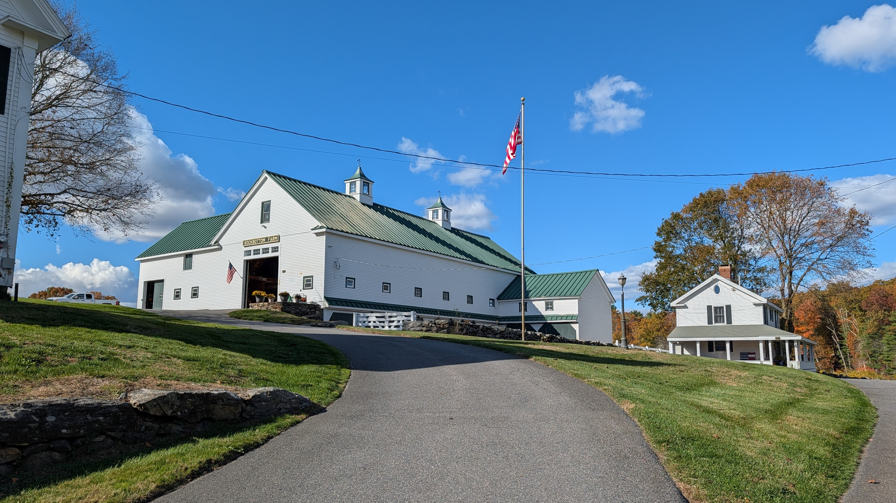
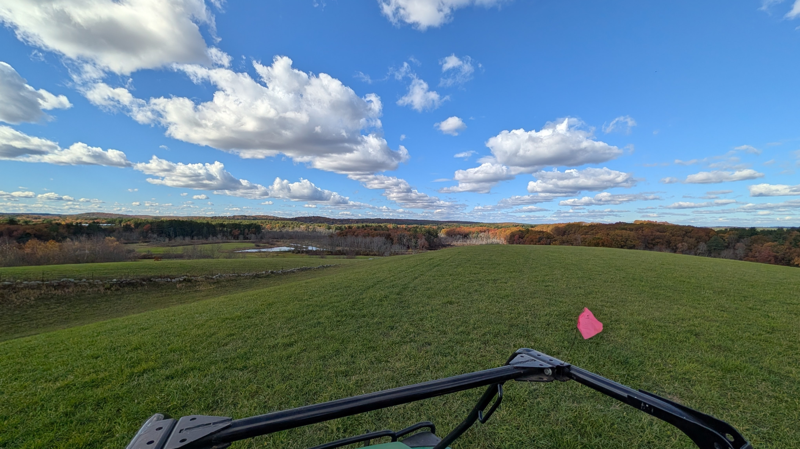

Cultivating Compassion.
Honoring Heroes.
The land serves a higher purpose: providing food for 100,000+ hungry kids and offering sanctuary for first responders.
Support Our Dual MissionWe dedicate our yield—grown with care across our Stow and Westford properties—to serve over 100,000 children facing food insecurity nightly in Massachusetts. This is our direct response to a community crisis, providing consistent, nutritious, locally grown food to those who need it most.
The farm provides a vital sanctuary and location for wellness courses and retreats tailored for our first responders. After facing daily trauma, this tranquil setting offers a natural, restorative space for healing, reflection, and building long-term resilience.
Rockbottom Farm is driven by Bob Waskiewicz's singular vision: that agriculture can be a powerful engine for social good. He recognized that the most vulnerable—children struggling with hunger—and the most courageous—our first responders battling burnout—share a common need for sustenance and care.
"Our purpose isn't just to grow crops; it's to cultivate a stronger, more resilient Massachusetts by serving those who protect and those who need protection."


Your support is critical. Whether through donations, time, or participation, you help us nourish the vulnerable and heal the heroes.